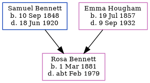

Rosa Bennett 1881 - c1979
[ Home ] | [ Calendar ] | [ Surnames Index ] | [ Errors ] | [ Family History ]A laundress and assistant insurance agent and the eldest of 5 children of Samuel Bennett (a farm servant) and Emma Hougham, Rosa Bennett, the first cousin three-times-removed on the mother's side of Nigel Horne, was born in Wingham, Kent, England on 1 Mar 18811,2,3.
During her life, she was living at Ashen Trees in Wingham on 3 Apr 18816; at Station Road, Bekesbourne, Kent, England on 5 Apr 18914; at Sutherland Road, Tunbridge Wells, Kent on 2 Apr 19115; and at 4 Quarry Cottages, Uckfield, Sussex, England on 29 Sept 19391.
She died c. Feb 1979 in Tunbridge Wells, Kent, England3.
Parents
- Samuel was born on 10 Sept 1848
- Emma was born on 19 Jul 1857
Citations
- 1939 Register - Findmypast (was recorded at this address)
- England & Wales births 1837-2006 - Findmypast
- England & Wales deaths 1837-2007 - Findmypast
- 1891 England, Wales & Scotland Census - Findmypast (was age 10 and the daughter of the head of the household)
- 1911 Census for England & Wales - Findmypast (was age 30 and a boarder in the household)
- 1881 England, Wales & Scotland Census - Findmypast (was age 0 and the daughter of the head of the household)
Media
England & Wales deaths 1837-2007 - BMD/D/1979/1/AZ/000094/126
England & Wales births 1837-2006 - BMD/B/1881/1/AZ/000046/294
1911 Census for England & Wales - GBC/1911/RG14/04049/0625/2
1939 Register Transcription - TNA-R39-2560-2560E-006-17
1881 England, Wales & Scotland Census - GBC/1881/0004882983
Family Tree
Map
Generated by ged2site. Last updated on Jul 3, 2024
Known Issues
Census information missing between Census UK 1891 and Census UK 1911